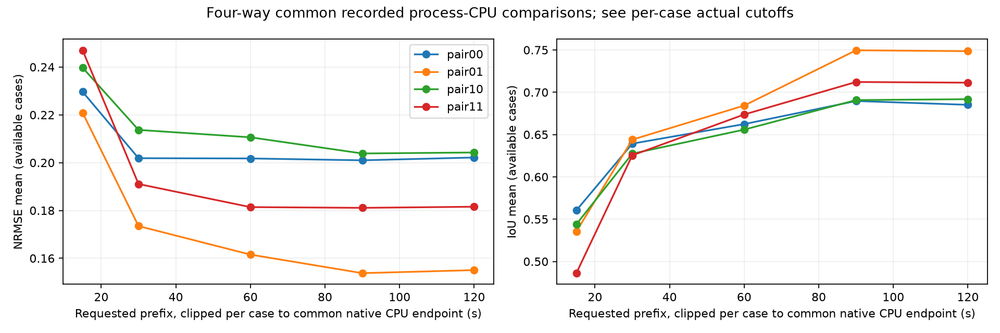
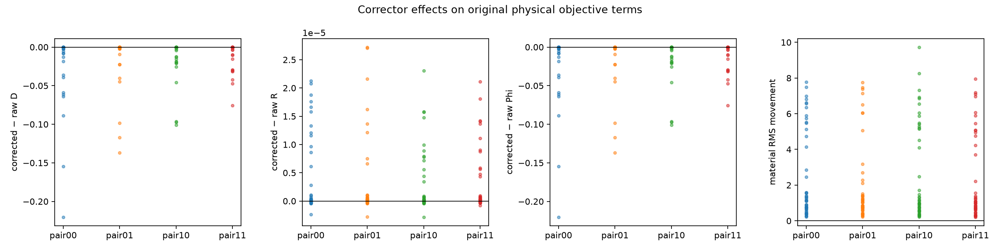
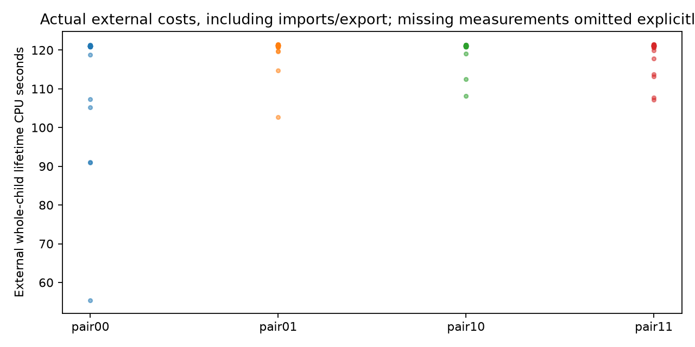
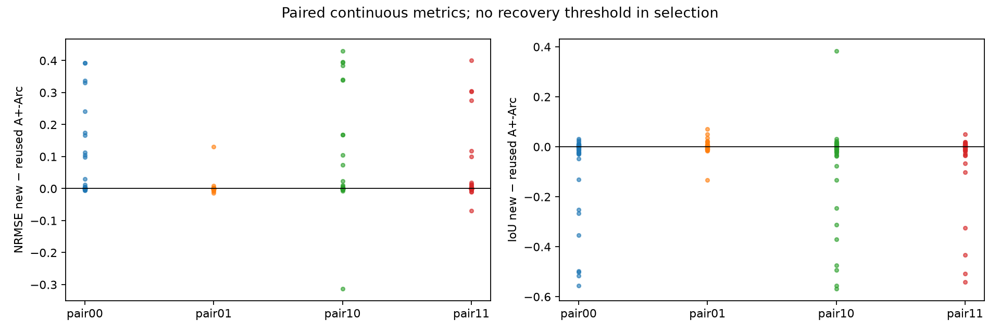

15项实际图像／PDF。完整文件名和对象ID保留；图中方法、视图与指标以原图为准。
FIGURES/exposed48
analysis/exposed48_v2/FIGURES

common_CPU_prefix_curves · 原图analysis/exposed48_v2/FIGURES/common_CPU_prefix_curves.png
corrector_effects · 原图analysis/exposed48_v2/FIGURES/corrector_effects.png
external_CPU_costs · 原图analysis/exposed48_v2/FIGURES/external_CPU_costs.png paid_prefix_curves · 原图analysis/exposed48_v2/FIGURES/paid_prefix_curves.png
paid_prefix_curves · 原图analysis/exposed48_v2/FIGURES/paid_prefix_curves.png
paired_metric_differences · 原图analysis/exposed48_v2/FIGURES/paired_metric_differences.png recovery_membership · 原图analysis/exposed48_v2/FIGURES/recovery_membership.png
recovery_membership · 原图analysis/exposed48_v2/FIGURES/recovery_membership.png